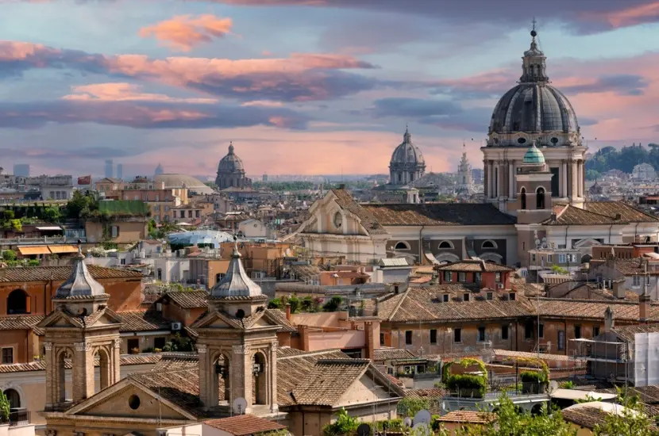
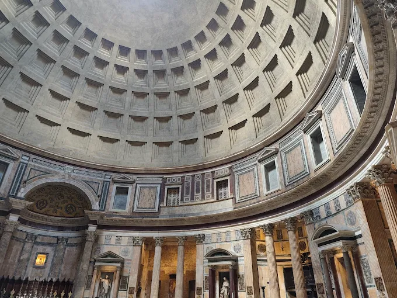
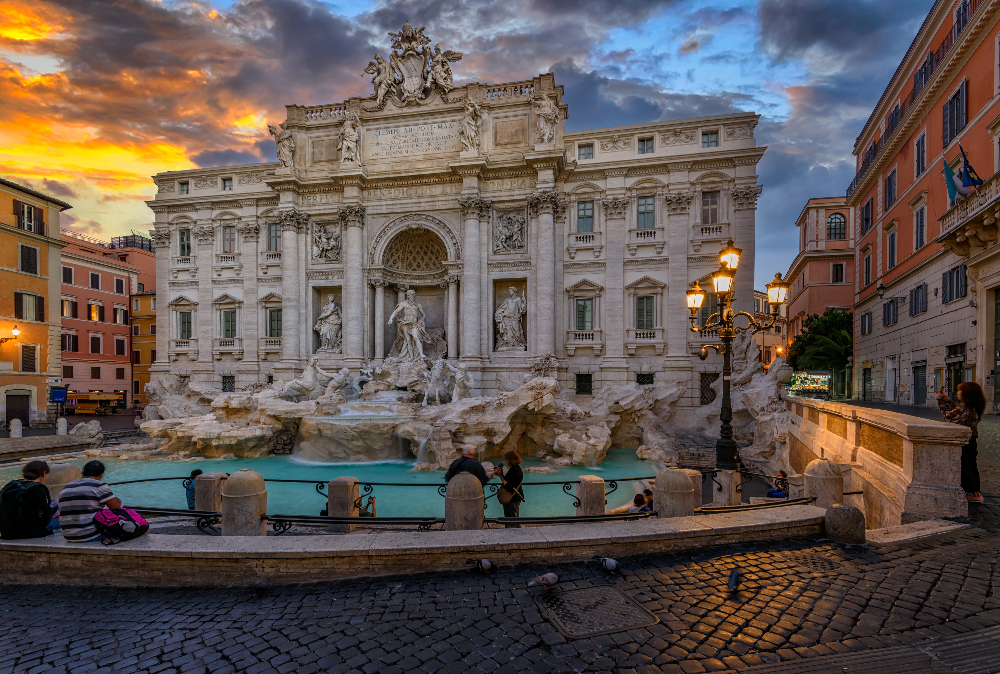
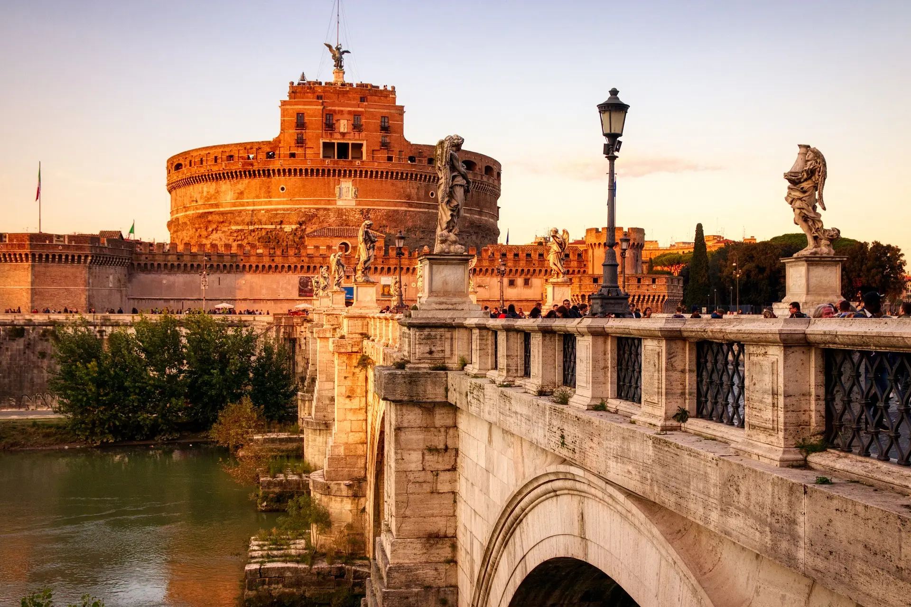
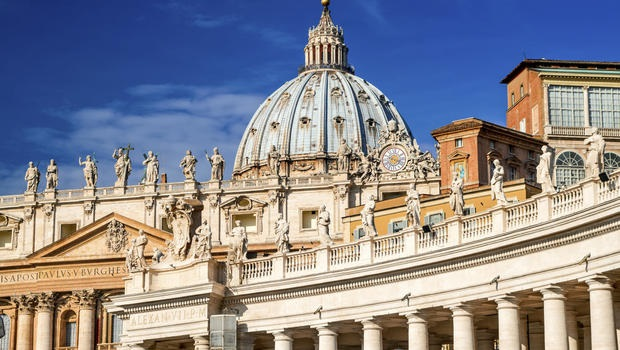

Rzym
Rzym – stolica i największe miasto Włoch, położone w środkowej części kraju nad rzeką Tyber i Morzem Śródziemnym, zarazem stolica regionu administracyjno-historycznego Lacjum. Centrum administracyjne ma powierzchnię 1287 km² i liczbę ludności 2 825 661, będąc trzecim co do wielkości miastem Unii Europejskiej.

Główne Atrakcje
PANTEON W RZYMIE

Okrągła świątynia na Polu Marsowym, ufundowana przez cesarza Hadriana w roku 126 na miejscu wcześniejszej z 27 r. p.n.e., zniszczonej w pożarze w 64 r. n.e. Budową gmachu kierował Apollodoros, zesłany, po czym prawdopodobnie stracony później przez cesarza.
FONTANNA DI TREVI

Najbardziej znana barokowa fontanna w Rzymie, w rione Trevi. Została zbudowana z inicjatywy Klemensa XII w miejscu istniejącej wcześniej fontanny zaprojektowanej przez Leona Battiste Albertiego z 1435 r.
ZAMEK ŚWIĘTEGO ANIOŁA I MAUZOLEUM HADRIANA

Grobowiec cesarza Hadriana, jego rodziny oraz następców, znajdujący się na prawym brzegu Tybru w Rzymie, w pobliżu Watykanu. Budowę mauzoleum rozpoczęto za życia Hadriana, ukończono je jednak dopiero za panowania jego następcy Antoninusa Piusa w 139 roku.
KOLOSEUM

KOLOSEUM właściwie amfiteatr Flawiuszów – amfiteatr w Rzymie, wzniesiony w latach 70–72 do 80 n.e. przez Wespazjana i Tytusa – cesarzy z dynastii Flawiuszów.
BAZYLIKA ŚW PIOTRA W RZYMIE

Zbudowana w latach 1506–1626, na miejscu starszej bazyliki wczesnochrześcijańskiej, fundacji cesarza Konstantyna Wielkiego, jedna z czterech bazylik większych Rzymu.